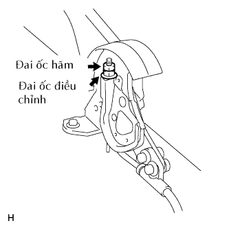

HỆ THỐNG PHANH TAY > ĐIỀU CHỈNH |
| 1. THÁO NẮP LỖ PHANH TAY |
 |
Nhả khớp 4 vấu và tháo nắp lỗ.
| 2. NỚI LỎNG ĐAI ỐC HÃM VÀ ĐAI ỐC ĐIỀU CHỈNH |
|  |
| 3. THÁO BÁNH XE SAU |
| 4. ĐIỀU CHỈNH KHE HỞ GUỐC PHANH |
| 5. LẮP BÁNH XE SAU |
| 6. ĐIỀU CHỈNH HÀNH TRÌNH CẦN PHANH TAY |
Vặn đai ốc điều chỉnh cho đến khi hành trình cần phanh tay chính xác.
Kéo cần phanh tay lên trên với một lực xấp xỉ 200 N (20 kgf, 44 lbf) và tính số tiếng kêu tách
Xiết chặt đai ốc hãm.
| 7. ĐIỀU CHỈNH KHOÁ QUAY CHỈNH PHANH TAY |
 |
Nới lỏng đai ốc hãm và vặn khoá chỉnh phanh tay cho đến khi hành trình cần phanh tay chính xác.
Xiết chặt đai ốc hãm.
| 8. LẮP NẮP LỖ PHANH TAY |
 |
Cài khớp 4 vấu để lắp nắp lỗ.